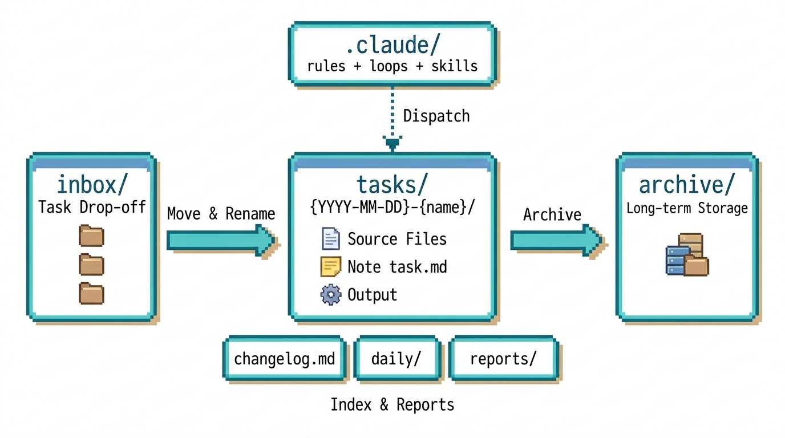
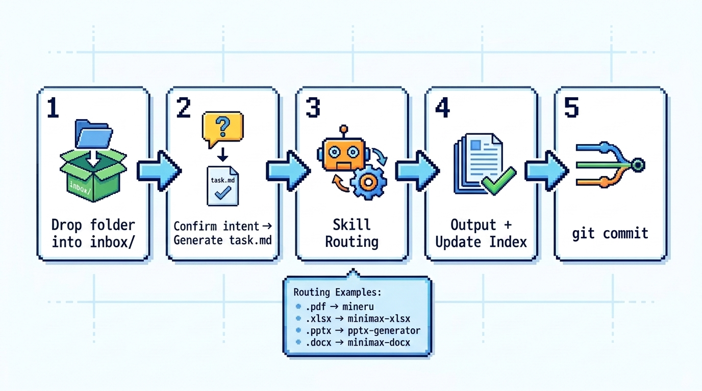
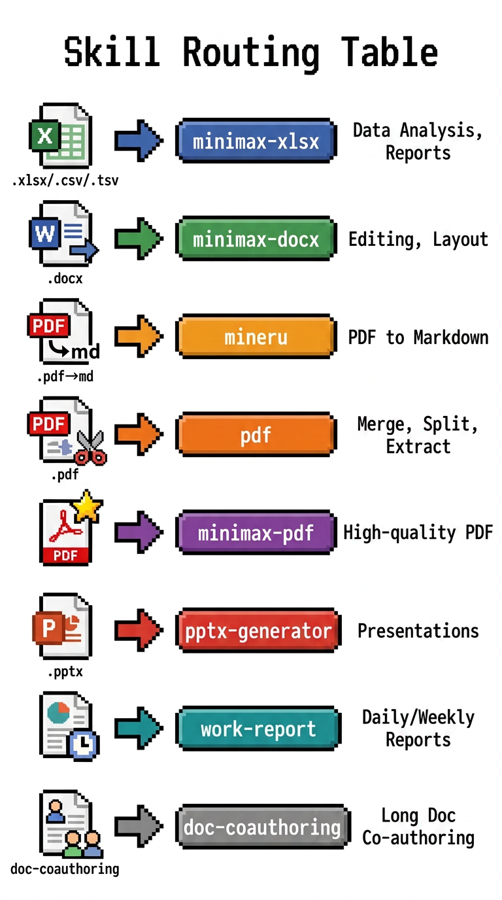
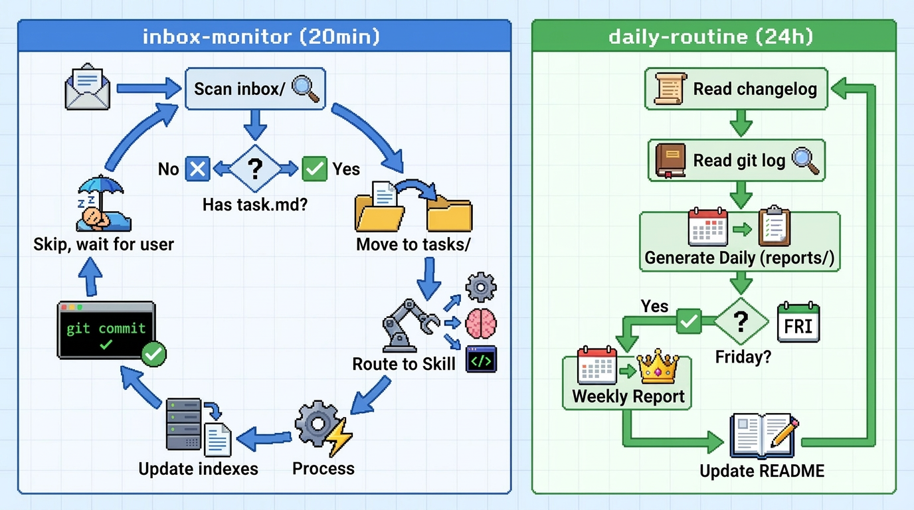

Automated office workspace powered by Claude Code
AI Workbench is an open-source automated office workspace by AI Lingnan, powered by Claude Code. Drop documents into inbox/, and the system automatically identifies the file type, routes it to the appropriate Skill for processing, archives the output, and updates all indexes.

Architecture: inbox drop-off → tasks processing → archive storage, with three-tier index sync
git clone https://github.com/ai-lingnan/ai-workbench.git
cd ai-workbenchSend this prompt to Claude Code:
Read the README.md of this project, then initialize the workspace.Tell me what this project can do and how it works.inbox/.
A task goes through 5 steps from start to finish: drop files, write a task note, route to a Skill, produce output, update index & git commit. You only participate in the first two.

When writing the task note, you and Claude decide which Skill to use. Here's the mapping between file types and Skills.

Two background scheduled tasks keep watch for you, running automatically around the clock.

| Directory | Purpose | Git |
|---|---|---|
inbox/ | Task drop-off box | ignored |
tasks/ | Task workspace | ignored |
reports/ | Daily & weekly reports | ignored |
daily/ | Daily file index | ignored |
demo/ | Example tasks | tracked |
templates/ | Document templates | tracked |
.claude/ | Config, rules, Skills | tracked |
changelog.md | Global task log | ignored |
| Index | Granularity | Content |
|---|---|---|
changelog.md | Task-level | Time, task name, source files, output |
daily/*.md | Day-level | All files processed that day |
README.md | Directory-level | Summary index of entries in each directory |
Place task folders into inbox/. Each folder = one task, and can contain multiple source files.
inbox/
├── Q1-Analysis/
│ ├── data.xlsx
│ └── template.docx
└── Meeting-Notes/
└── recording.pdfTell Claude what you want done. It generates a task.md note documenting the requirements and processing plan.
## Requirements
Generate Q1 data analysis report using the template
## Plan
- Skill: minimax-xlsx
- Steps: Read → Analyze → Output| Scenario | Skill | Description |
|---|---|---|
| PDF → Markdown | mineru | Extract text content |
| Merge/Split/Extract | pdf | Manipulate existing PDFs |
| Generate high-quality PDF | minimax-pdf | Design-grade output |
inbox/ for subfolderstask.md enter processingtasks/ and renamedreports/